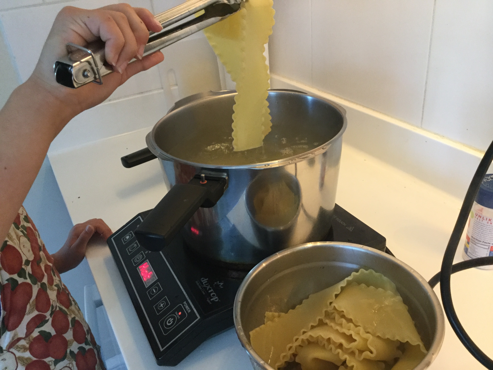
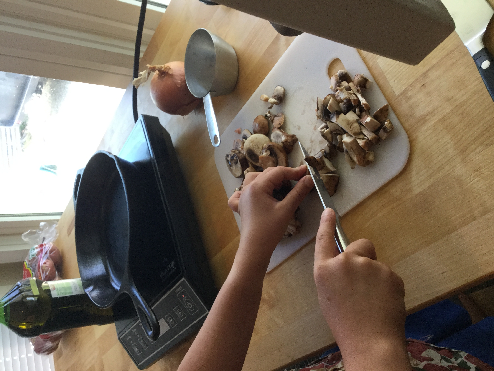
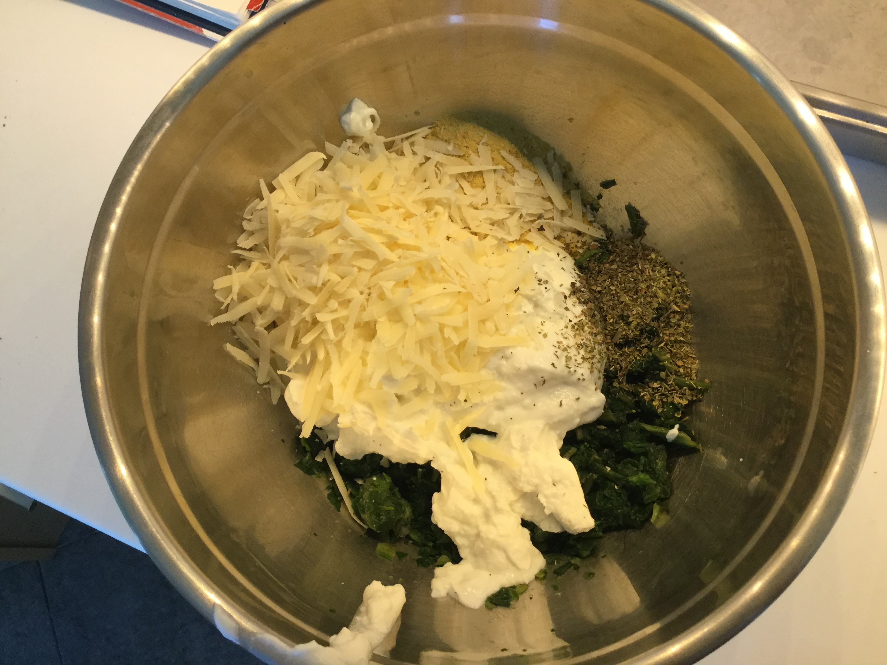
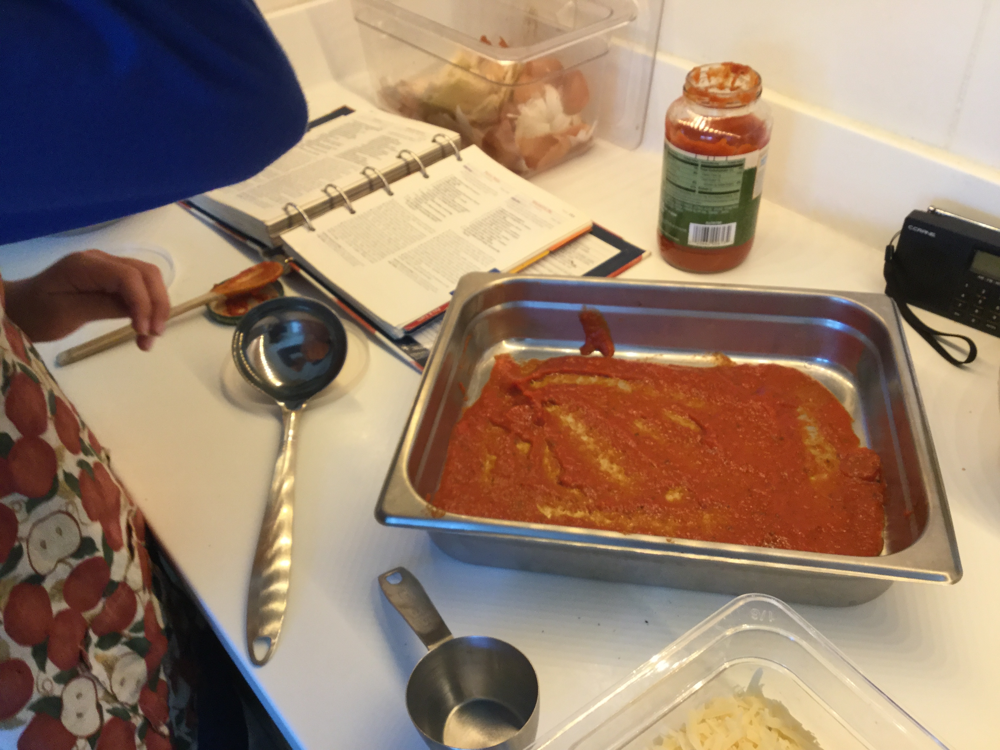
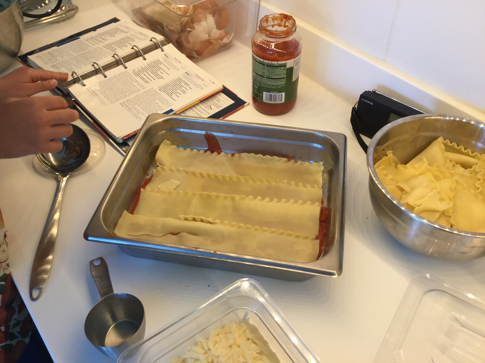
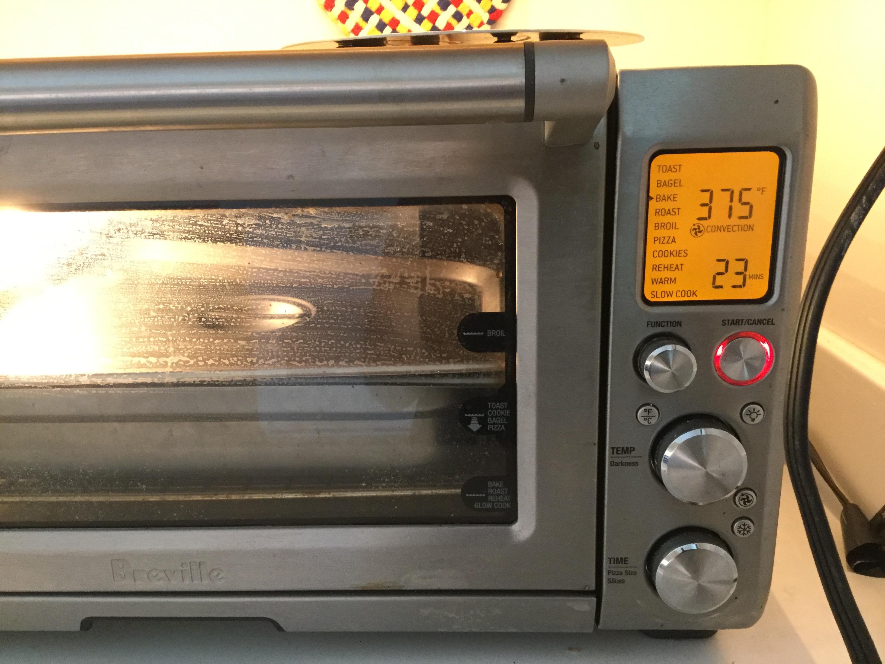
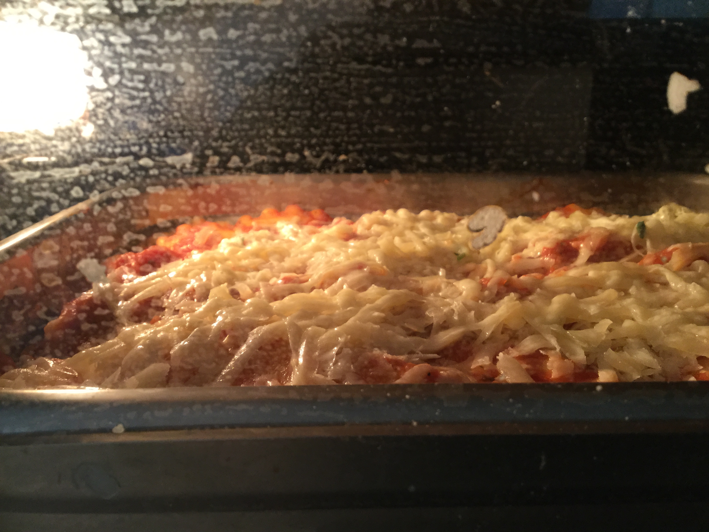
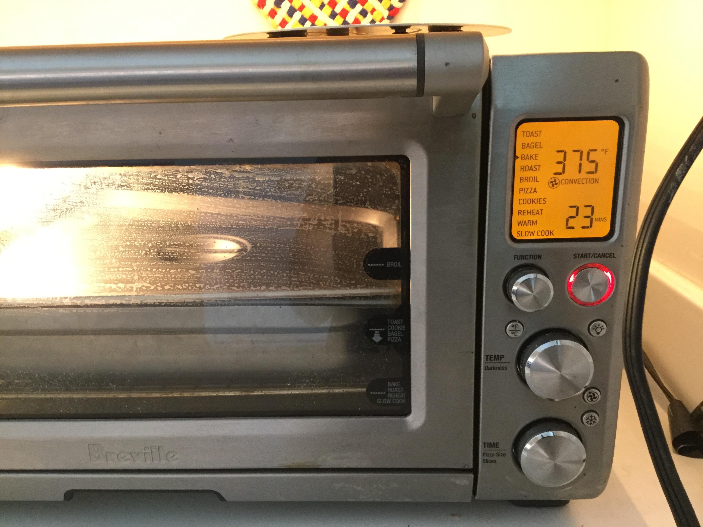
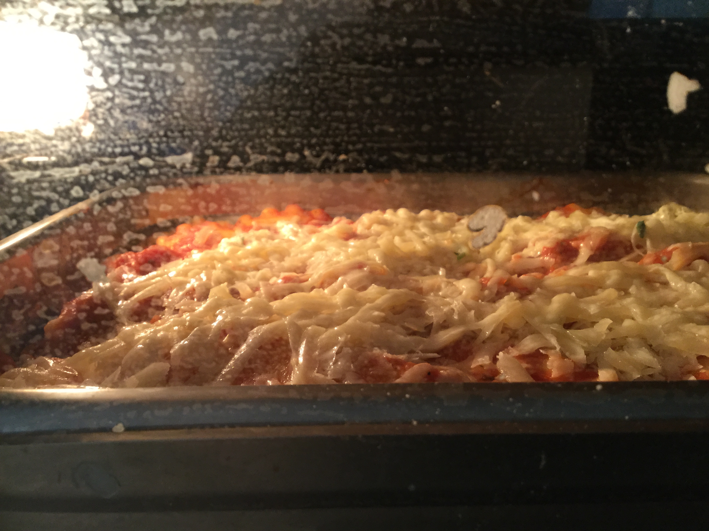

First, cook the noodles in hot water. Make sure they are chewy but not to soft.
Then, chop onions, garlic, and mushrooms and cook them in oil.

Next, pat the frozen spinach dry and mix it with the eggs, 1 cup of parmesan cheese, 2 cups of yogurt, a little bit of nutritional yeast, some basil, and some oregano. Then pour the cookied mushroom mixture into the filling and stir.

Then, spread a half cup of marinara across the bottom of a pan. Cover it with lasagna noodles. Pour 1/3 of the filling onto the noodles and spread it out evenly. Lay another set of noodles on top and repeat until the filling is gone. Then, spread some marinara over the last layer of filling and place the noodles on top. Spread the rest of the marinara on top of the noodles.
 


Finally, put the lasagna in the oven for 40 minutes or until the sides start to bubble. After 30 minutes, sprinkle the rest of the parmesan on top. Allow the lasagna to cool for about 10 minutes.
 



Serve and enjoy!